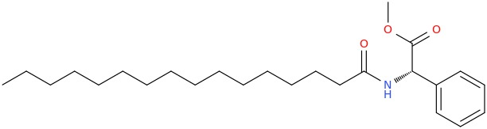

From chemical identity to testable predictions.
This release contains a real numerical effective quantum model with a researcher-supplied P1H11 identity. It is not an ab initio simulation of this molecule, a calibrated gel model, or a reproduction of the manuscript’s claimed quantum computer.
1. Material identity and provenance
The researcher supplies the name (S)-phenyl-hexadecanoylamino-acetic acid methyl ester and the following chemical drawing. These anchor connectivity and the intended S stereochemistry. The stereocentre belongs to the phenylglycine-derived head group; an amide connects it to the hexadecanoyl chain, and the carboxyl group is methyl-esterified.

The attachment called “Pasted text.txt” records the agreed discussion and scope; it contains no new coordinates or measured Hamiltonian parameters. The simulator does not assign atomic coordinates from this two-dimensional drawing. Its positive/negative assembly twists are geometric controls, not an automatic assignment of assembly handedness from molecular S stereochemistry.
| Quantity | Current evidence / implementation | Required improvement |
|---|---|---|
| Chemical identity | User name and drawing | Verify stereochemistry and atom ordering in a coordinate file |
| Electronic transition | 5.64 eV, an assumed effective UV transition (~220 nm) | State-resolved electronic calculations and measured spectra; not a fitted assignment |
| Geometry | Idealized radius 1.2 nm, rise 0.36 nm, twist 25–100° | Conformer ensemble and aggregate packing constraints |
| Coupling | Point-dipole angular factor, J₀ up to 30 meV at fixed r₀ = 1.2 nm | Transition densities, screened couplings and short-range/charge-transfer corrections |
| Environment | Phenomenological site dephasing; 2 ps excited-state decay | Measured relaxation, solvent dynamics and spectral density |
| Magnetic properties | Not supplied; no magnetic coupling added | Magnetic moment / susceptibility, spin states, relaxation and actual coil fields |
2. Executable quantum model
The basis is |g⟩ plus one localized excitation |i⟩ per effective chromophore. The main models have 12 sites; monomer and dimer controls have 1 and 2. Multiple electronic excitations, electron-density evolution, nuclear dynamics and intermolecular charge-transfer states are absent.
rᵢ = (R cos θᵢ, R sin θᵢ, (i − (N−1)/2) h) θᵢ = handedness × i × twist μ̂ᵢ = (−√0.75 sin θᵢ, √0.75 cos θᵢ, 0.5) Jᵢⱼ = J₀ (r₀/rᵢⱼ)³ [μ̂ᵢ·μ̂ⱼ − 3(μ̂ᵢ·r̂ᵢⱼ)(μ̂ⱼ·r̂ᵢⱼ)] Hᵢᵢ = Etransition − Ecarrier Hᵢg(t) = −V₀ f(t) [μ̂ᵢ·e] uℓ(rᵢ), Hgᵢ = Hᵢg* f(t) = exp[−(t−80 fs)² / (2 × (25 fs)²)] ρ̇ = −i[H,ρ]/ℏ + Σ D[√γ |i⟩⟨i|]ρ + Σ D[√κ |g⟩⟨i|]ρ ℏ = 0.6582119569 eV fs; κ = 0.0005 fs⁻¹; ρ(0) = |g⟩⟨g|
The carrier is removed using the rotating-wave approximation. The drive coefficient already includes the chosen positive-frequency convention; it is an energy parameter, not a calibrated laser intensity. Circular fields use e = (x ± i y)/√2. The model includes spatial electric-dipole coupling, not molecular magnetic-dipole or electric-quadrupole transition moments; it must not be interpreted as a quantitatively correct molecular CD/OAM-dichroism calculation.
Complex-valued density matrices are evolved with explicit RK4 for 500 fs, with dt ≤ 0.5 fs selected from the Hamiltonian row-sum bound; snapshots are saved every 2 fs. Calculation runs in a Web Worker. Each run uses a fixed step selected before integration: target dt = min(requested dt, 0.12 ℏ / (maximum absolute Hamiltonian row sum + V₀√N)), then subdivides 2 fs into an integer number of steps. This norm-based safeguard is not an adaptive error estimate. The fixed-step method is not mathematically positivity-preserving for all possible settings; independent positivity and convergence checks are therefore essential.
3. Hierarchy and limits
Bundle: three four-site helices displaced on a circle of adjustable radius (the “bundle-axis radius” control is this radial offset, not the nearest-axis distance). Junction motif: four three-site segments, tilted 60° about y and then rotated about z by branch azimuth before translation. All pairwise dipole couplings are computed from positions; displayed edges are a thresholded analysis of that full Hamiltonian. These are small idealized motifs in a shared single-excitation Hilbert space.
No molecular self-assembly, network growth, gel rheology, solvent distribution or macroscopic coherence is implied. The next hierarchy levels require validated coarse-grained potentials and ensembles. A gel cannot be obtained by simply multiplying a coherent 12-site trajectory.
4. Structured light and scattered field
uℓ(x,y,z) = exp(−r²/w₀²) (√2 r/w₀)^|ℓ| / √(|ℓ|!) × exp[i(ℓφ + kz)] r, φ measured from beam centre; k = 2π / λ; λ[nm] = 1239.841984 / Ecarrier[eV] The beam centre is offset along x by offset × w₀. Equal ∫ |uℓ|² dA across ℓ at fixed w₀. A(n,t) = Σᵢ [μ̂ᵢ − n(n·μ̂ᵢ)] ρᵢg(t) exp[−ik n·rᵢ] Icoherent(n,t) ∝ |A(n,t)|²
The beam is sampled near its waist over a nanometre-scale aggregate; waist evolution and Gouy phase across that tiny longitudinal range are neglected. Waist choices are 500–2000 nm, so the model avoids a fictitious freely propagating nanometre-wide beam. The amplitude and optical phase are applied locally to each site. The incidence axis is z and the polarization is transverse.
The angular radiation map shows the coherent contribution in arbitrary units, without a detector aperture, calibrated dipole magnitude, solvent Green tensor, scattering prefactor, fluorescence correlations, self-consistent propagation or incident/scattered interference. It is not total transmitted intensity. No material-field feedback, complete energy budget or OAM output decomposition is claimed in this version. Those require an electrodynamic solver with consistent units and boundary conditions.
A vortex phase plate can create the azimuthal phase, but a phase-only plate acting on a Gaussian is not automatically a pure LG mode. This release models prescribed LG excitation, not a complete vortex-lens optical train. Next: explicitly propagate the field through the supplied optics, sample, solvent cell and detector.
5. Quantum-state geometry and input comparison
gθθ ≈ [1 − |⟨u₀(θ−δ)|u₀(θ+δ)⟩|²] / (2δ)² δ = 0.02° converted to radians; u₀ is the lowest exciton eigenvector. Omit points where the first excited-manifold eigenvalue gap < 10⁻⁷ eV. D_F(t) = √Tr[(ρX(t) − ρY(t))†(ρX(t) − ρY(t))]
The quantum-metric curve is a separate eigenstate parameter scan with the other material controls fixed, using a consistent abstract site basis. It omits parameter dependence of the underlying molecular orbital basis. The plot uses log₁₀(1 + gθθ). Near crossings require smaller parameter steps and subspace geometry; no Berry-curvature or topological-invariant claim is made. It is distinct from the mixed-state trajectory.
X/Y comparison evolves two pulse inputs independently. It plots the Frobenius state distance and the signed difference of measurable total excitation probabilities. Frobenius distance is not trace distance or a guaranteed experimentally accessible discrimination probability. Population readout can be identical even while density matrices differ. There is no trained classifier, task accuracy or demonstrated computational advantage.
6. Manuscript-to-PTC connections
Source: A 1024-channel room-temperature polyatomic time-crystal architecture for self-operating quantum computing, AIP Advances 16, 105011 (2026). Its Table IV distinguishes experimental material-level observations, modeled scaling and prospective full-system operation. We preserve that distinction.
| Manuscript concept | Current executable connection | Still missing |
|---|---|---|
| Quantum clocks / phase relations | Complex optical coherences ρᵢg; radius = magnitude, hand = phase in rotating frame | Identification of the manuscript’s actual clock degrees of freedom and detection protocol |
| Hierarchical geometry | Helix, bundle and junction motifs with position-derived couplings | Measured multiscale packing, dynamics and gel ensemble |
| Homology and Hodge analysis | Thresholded coupling graph, β₀, β₁ and vertex Laplacian spectrum | Physically justified higher simplices, differential operators and observables |
| RF geometric-phase protocol | Explicit M3-inspired vector waveform | Magnetic Hamiltonian, adiabatic conditions and measurable geometric phase |
| Transfer-matrix tree / computation | Input-dependent quantum trajectories and readout difference | Derived transfer maps, explicit task encoding, benchmark and noise baselines |
| Soliton–polariton condensate | Not implemented | Photon modes, strong-coupling evidence, nonlinearity, pump, loss and saturation |
The manuscript’s six-coordinate construction is not represented as six ordinary spatial dimensions. Geometric curvature, fractal structure, temporal organization and operator noncommutativity require separate definitions; none is generated by assigning a decorative extra coordinate.
For an unfilled finite graph over a field, β₁ = E − V + β₀. The vertex Laplacian L₀ = BBᵀ counts components through its zero modes. Cycle modes instead belong to the edge operator BᵀB; adding filled faces changes that operator and the homology. We do not confuse these spectra. Changing the display threshold never changes the physical evolution.
Corrections retained: homology/cohomology dimensions match for the same finite complex over a field; boundary/coboundary compositions vanish; a tree alone has no graph cycles; a global phase is not observable; a unitary exp(−iγδ†δ) cannot by itself contract mismatch; driven condensation requires gain/loss and saturation. Phase alignment does not establish entanglement, robust time-crystal order or error correction.
7. RF protocol preview
M3-inspired field: B = (B₁ cos ωt, B₁ sin ωt, B₀), with x/y transverse to the z helix/optical axis. Linear RF and axial switching controls are also available. The preview displays two cycles in nanoseconds and fields in millitesla. These clocks are intentionally separate from the femtosecond optical trajectory. No RF control changes ρ in this release.
Required next: spin/orbital moments, g-tensors or a justified diamagnetic response; experimentally populated states; relaxation times; RF electric fields and coil maps. A physical −μ̂·B interaction must be derived before implementing claimed magnetic PTC manipulation.
8. Numerical checks
Machine-readable validation results include trace, Hermiticity, time-step convergence, purity, vortex-core field, beam normalization, eigenpairs, graph topology, RF-vector magnitude, dipole radiation, identical-input comparisons and independent SciPy DOP853 trajectories. Ten configurations cover multiple assemblies and complex drives. Positivity is checked independently through density-matrix eigenvalues.
Numerical validation does not establish that the effective states, rate constants or structures describe P1H11. Browser export preserves the precise geometry, Hamiltonian, complete density matrices, parameter scan and comparison results for reproducibility.
9. The next research increment
- Import validated molecular and aggregate coordinates; display actual atoms while preserving the distinction between atomic structure and excitation sites.
- Extract state energies, transition moments and densities from the existing quantum-chemistry workflow. Add local/charge-transfer states only when supported by those calculations.
- Compare calculated spectra with raw absorption/CD/emission data, including uncertainty and instrument limitations.
- Implement a consistent Maxwell/dipole or Green-function propagation model with calibrated units, interfaces and energy accounting; then add detector Stokes parameters and spatial/OAM mode projections.
- Introduce vibrations and structural ensembles, followed by a magnetic response if supported by material data.
- Implement a specific manuscript-inspired PTC model with explicit dynamical variables and a falsifiable test. Benchmark one input–output task before scaling the architecture.
Methods reading
- Provost & Vallée: Riemannian structure on manifolds of quantum states — foundation for pure-state metric.
- Forbes & Jones: Optical vortex dichroism in chiral particles — why focusing, multipoles and averaging matter beyond a simple electric-dipole model.
Return to the research workbench → · Original v0.1 specification